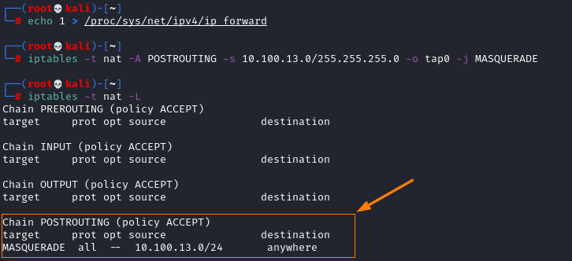

1. configuration settings Attacker side
Configure•
enable ipv4 forwarding
• enable NAT on Kali with iptables masquerade
echo 1 > /proc/sys/net/ipv4/ip_forward
iptables -t nat -A POSTROUTING -s [network_of_both_Attacker_and_Victim]]/255.255.255.0 -o tap0 -j MASQUERADE
Verify settings
Bibliography:https://ivanitlearning.wordpress.com/2019/05/20/icmp-redirect-attacks-with-scapy/